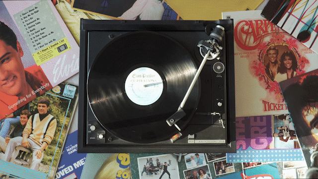

Dobrodošli! Ja sam Kristina, i želim vam pričati o svom iskustvu na kolegiju "Digitalni Multimedij 1". Tijekom ovog kolegija učimo raditi u ključnim alatima za digitalnu umjetnost i multimediju: Illustratoru, Photoshopu, Premiere Pro i Dreamweaveru. Kroz vježbe u Illustratoru i Photoshopu razvijamo vještine u grafičkom dizajnu i obradi slika, dok nam Premiere Pro omogućuje stvaranje i uređivanje videa. Dreamweaver koristimo za dizajn i izradu web stranica, što zaokružuje našu multimedijsku obuku. Svaka vježba mi pomaže unaprijediti tehničke vještine i kreativnost u digitalnoj umjetnosti. Konačno, izdvojila sam nekoliko sebi najdražih vježbi (zadatka) koje sam radila u ovom semestru, od svake teme po jedan.
Programi: Illustrator, FontForge
Zadatak:
- Crtanje Bezierovih krivulja u vektorskim programima u zadanom koordinatnom sustavu
- Definiranje sivog tona za ispunu i obrub objekata; debljina linije
- Slojevi (Layers)
- Automatsko crtanje objekata između zadanih objekta
- Pretvaranje teksta u objekte i izrezivanje maski
Moj finalni rad:
Programi: Photoshop
Zadatak:
- Tehnike selektiranja različitih tipova elemenata slike
- Polygonal Lasso za jednostavne selekcije
- Magnetic Lasso Tool, Quick Mask Mode – selekcije elemenata sa oštrim rubovima
- Selekcije uz pomoć kanala – za selektiranje zaamućenih, neravnih i rubova sa puno detalja
- Korekcije boja – Color Balance, Levels
- Izrada realistične sjene
Moj finalni rad:
Programi: Premiere Pro, Dreamweaver
Zadatak:
- Snimiti vlastiti kratki video ili pronaći besplatni stock video
- Izrezati video tako da se prvi i zadnji frame podudaraju
- Uzeti screencap i u Photoshopu napraviti masku nepomičnog dijela kinemagrafa te ga staviti preko videa
- beskrajni video exportati kao GIF
Moj finalni rad:
